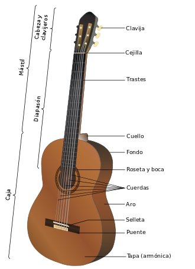

La guitarra, también conocida como guitarra clásica o guitarra española, es un instrumento musical de la familia de los cordófonos, es decir los instrumentos que producen su sonido al hacer vibrar las cuerdas. Es un instrumento musical de cuerda pulsada, compuesto de una caja de resonancia, un mástil sobre el que va adosado el diapasón o trastero generalmente con un agujero acústico en el centro de la tapa (boca) y seis cuerdas. Sobre el diapasón van incrustados los trastes, que permiten hacer sonar las diferentes notas.La guitarra es es fruto de siglos de evolución de estos cordófonos. Los orígenes del instrumento proceden de civilizaciones de Asia menor (sumerios, acadios, asirios...) de. 2.500 A.C. Desde entonces los cordófonos se han desarrollado de muy diversas maneras a lo largo del tiempo con diferentes números de cuerdas y formas. Algunos instrumentos de la familia son el cuatro, el ukelele, el requinto, el charango y distintos tipos de guitarrón, como el guitarrón mexicano, de uso frecuente por los mariachis.
La guitarra tal y como la conocemos hoy es la heredera del instrumento que ideó Antonio de Torres, constructor almeriense que sentó los cánones y proporciones actuales. La guitarra es hoy un instrumento polifacético que se usa tanto en la música clásica como en las músicas populares. En su versión electrificada es el instrumento más utilizado en géneros como blues, rock y heavy metal. También es la protagonista en las músicas populares de raíces de España y Latinoamérica. Cabe destarcar la importancia que la guitarra tiene en el flamenco, género musical que nace en España durante el siglo XVIII. En la actualidad los guitarristas flamencos suelen usar una guitarra con ligeras variaciones en la construcción, conocida como guitarra de flamenco. La guitarra clásica es también bastante frecuente entre los cantautores.
La guitarra ha sufrido variaciones en su forma a lo largo de los siglos. Además del número de cuerdas, las variaciones del instrumento han surgido para adaptarlo a las necesidades del intérprete hasta adoptar la forma actual. Este instrumento está fabricado con madera prácticamente en su totalidad. Hoy en día se utilizan muy diversos tipos, aunque comúnmente los más empleados son principalmente la madera de palisandro de la India y otros: abeto, caoba, cedro de Canadá, pino, ciprés (muy popular entre las guitarras que se utilizan entre los guitarristas flamencos) y ébano.
Hoy en día los constructores diferencian entre la construcción de un instrumento clásico o flamenco, aunque esto no siempre tenga criterios musicales o sonoros, y sí estéticos y de moda. Algunos afirman que las maderas o el tipo de construcción depende según la guitarra sea clásica o flamenca,5 aunque los hechos indican que durante muchos años en el siglo XX los guitarreros no llevaran a cabo esas diferenciaciones.
Básicamente, está compuesta por la caja de resonancia, el mástil, el puente, el diapasón, los trastes, las cuerdas y el clavijero. No obstante, algunos guitarristas han personalizado sus guitarras y pueden poseer más de un diapasón o sobrepasar las 6 cuerdas. Las más populares de 7 cuerdas se utilizan en la música popular brasileña, la de 8 cuerdas que popularizó el gran José Tomás, o la de 10 cuerdas de Narciso Yepes. Sin embargo, no es una cuestión generalizada. Durante el siglo XIX existieron guitarras de muy diversos tipos, como guitarras-arpa con numerosas cuerdas.Incluso recientemente y con criterios de sonoridad y volumen, el guitarrista uruguayo Abel Carlevaro patentó un modelo en el que se ampliaba el volumen de la caja eliminando el óvalo superior de la guitarra, y se prescindía del orificio de la tapa armónica, para que esta tuviera mayor superficie de vibración, y por lo tanto mejor sonido y de mayor volumen.
Sin embargo, el modelo que siempre ha prevalecido durante los últimos dos siglos sigue siendo la guitarra convencional de 6 cuerdas y de la forma de 8 que todos reconocemos.Tras ser encolados todos los elementos que forman la caja de resonancia, se une con el mango y se incluyen refuerzos en el contorno de las dos tapas (cenefas), en el centro del fondo y en las uniones inferiores y superiores de los aros. Posteriormente se adhiere el diapasón.
Entre el mástil y el clavijero se coloca la cejilla que sirve para apoyar y separar las cuerdas. La cejilla habitualmente es de marfil, hueso, plástico o incluso metálica, en función de la calidad del instrumento.5Una vez que todos los elementos que la forman han sido unidos, se procede a su barnizado. Existen dos formas de llevar a cabo este proceso, una más costosa y trabajosa que consiste en barnizar el instrumento a mano con goma laca; y la otra barnizarlo con una pistola a base de poliuretano que seca rápidamente. El inconveniente de este último método es que el barniz forma una placa sobre la caja de resonancia que le resta sonido al instrumento.5
Posteriormente se realiza el aplanado del diapasón y la colocación de los trastes, los cuales suelen ser de alpaca o latón. Es sumamente importante que el trasteado sea perfecto ya que de él depende la afinación de la guitarra. Acto seguido, en la parte inferior de la tapa armónica se colocan las clavijas y las cuerdas. Antiguamente las cuerdas eran de tripa de animal pero en las guitarras modernas son de nailon.